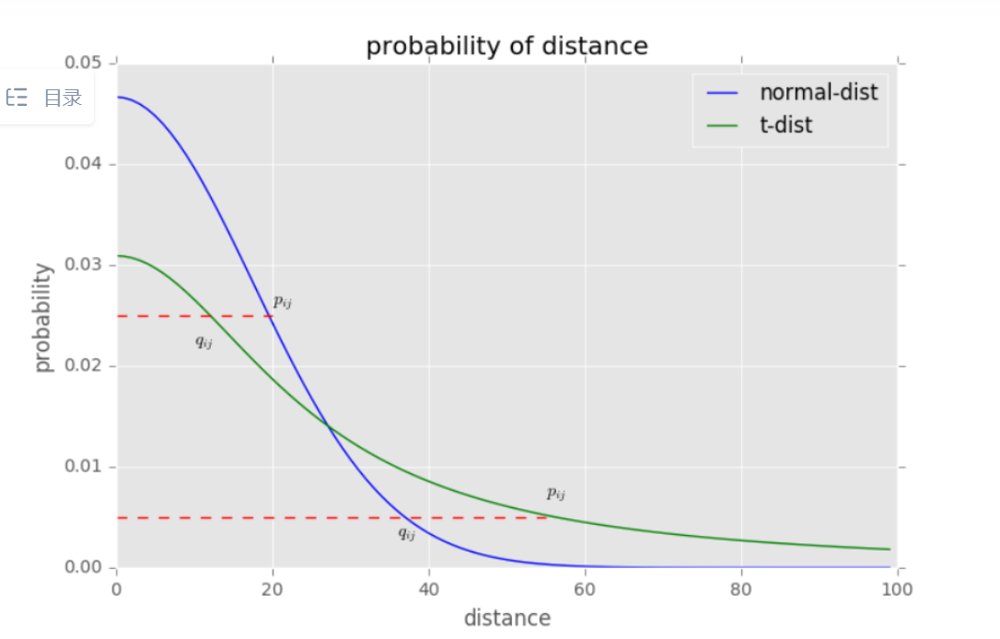

t-SNE
t-SNE全称为t-distributed Stochastic Neighbor Embedding，t随机邻近嵌入。是效果最好的数据降维和可视化方法之一，用于将高维数据集投影到低维，用于判断数据集有没有很好的可分性。若低维投影可分则源数据集一定可分，若低维投影不可分不一定说明源数据集不可分。
从该文阅读：https://zhuanlan.zhihu.com/p/426068503
t-SNE的基本思想是，原本在高维空间中距离远的数据在投影空间后的距离也应该很远，同样的，原本距离近的数据降维后也应该很近。为了实现这一点，将距离的远近关系转换为概率分布。这样降维前后的数据都将对应一个概率分布，若两个概率分布接近，则两者的距离关系也类似。 实际操作时，会在低维空间中随机生成相应数量的数据点，然后调整其中数据点的位置来使得低维空间和高维空间之间的概率分布接近。
描述远近关系的分布概率为：
$$ p(j|i) = \frac{S(x_i,x_j)}{\sum_{k\neq i}S(x_i,x_k)}\quad,j\neq i,i=1,2,\dots,n $$其中$S(x_i,x_j)$是描述数据点$i,j$之间的相似度的函数。在高维空间中，SNE和t-SNE均采用欧式距离指数衰减的形式：
$$ S(x_i,x_j)=\exp(-\Vert x_i-x_j \Vert_2^2/(2\sigma_i^2)) $$高维空间中两个数据点的距离来开，相似度将迅速减小，增大低维空间中数据点之间的距离。方差项的引入让其更像一个正态分布？（来自知乎作者的说法，不知道为什么）其中针对每一个数据点i的方差值都不一样，通常会引入一个困惑度的概念来决定方差。
$$ Perp(P_i)=2^{H(P_i)}\\ H(P_i)=-\sum_{j\neq i}p(j|i)\log_{2}{p(j|i)} $$其中$H(P_i)$为信息熵，表达分布的复杂程度，H越大分布越复杂，当事件分布越均匀时H越大。这是一个约束条件下的极值问题，可以用拉格朗日乘数法求解。随着方差$\sigma_i$的增大H单调增大（没有手动证明，来自知乎），因此针对每一个点i可以用二分法找到一个困惑度合理的$\sigma_i$。
在低维空间中，SNE算法依然采用高维空间的形式，只是指定了方差为$\frac{1}{\sqrt{2}}$。而t-SNE算法采用如下的相似度定义：
$$ S^{'}(z_i,z_j)=[1+\Vert z_i-z_j \Vert]^{-1} $$如图所示，通过新的相似度函数，使得原本相近的点离得更近，更远的点里的更远，从而解决了拥堵问题。 
上述工作完成了高维空间和低维空间的概率分布的定义，接下来需要定义两个分布的差异，通常采用KL散度来定义二者的差异。
$$ D_{KL}(p||q)=\sum_x P(x)log\frac{P(x)}{Q(x)}=\sum_x P(x)(logP(x)-logQ(x)) $$KL散度表示两种分布之间的信息损失，KL散度越小代表两种分布越相似。
因此t-SNE需要调整随机生成的低维空间的数据以降低两个分布之间的KL散度。即优化任务描述为
$$ L(z_1,z_2,\dots,z_n=\sum_{i=1}^n\sum_{j\neq i} P(j|i)\log \frac{P(j|i)}{Q(j|i)})\\ (z_1^*,z_2^*,\dots,z_n^*)=arg min L $$余下的部分和神经网络的更新类似，KL散度作为损失函数，然后进行梯度下降更新直到收敛。